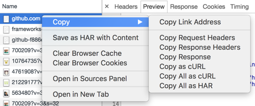

基于curlconverter
Convert curl syntax to Python, Ansible URI, Node.js, R, PHP, Strest, Go, Dart, JSON, Rust
curl command
Python requests
If your syntax is correct, create an
issue
.
Language
Ansible
Dart
Go
JSON
Node.js
PHP
Python
R
Rust
Strest
Get a curl command from Chrome
1) Open the network tab in Chrome DevTools (Cmd + Opt + I)
2) Control-click a request and navigate to "Copy as cURL".
3) Paste it in the curl command box.

声明
网站不会收集你的任何信息,整个转换过程在你本地浏览器代码中执行完成,如果你还是觉得不安全,可以下载本源码
Github
感谢star🙏